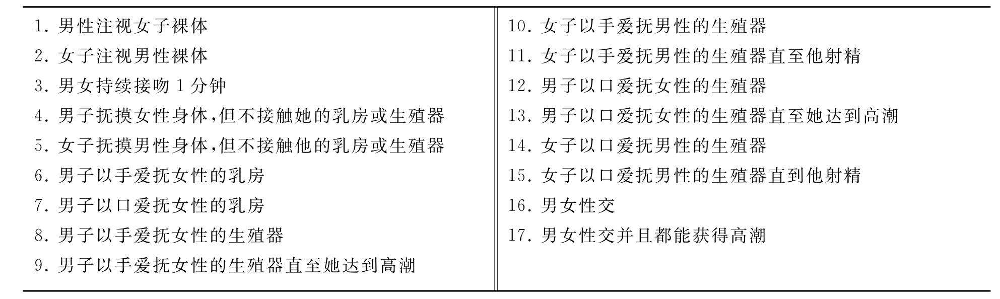
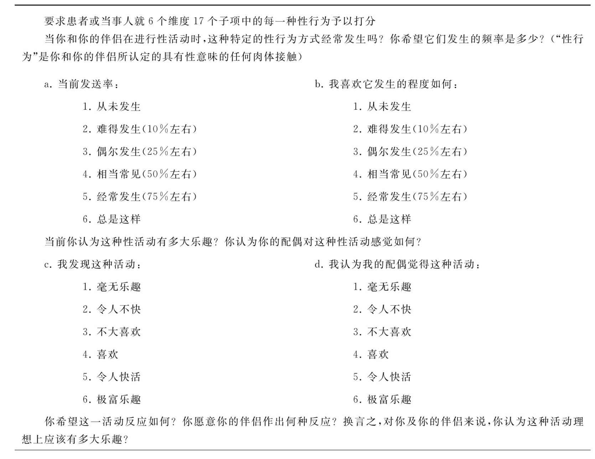
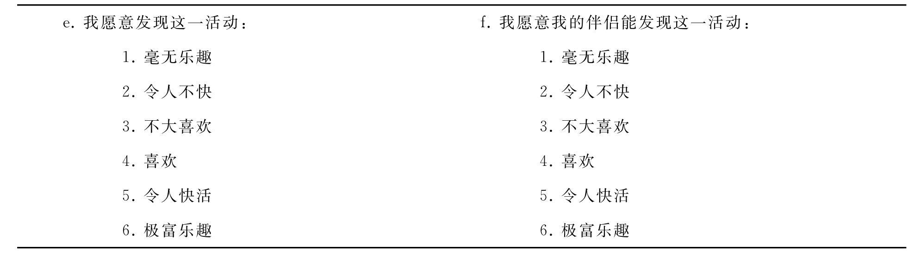
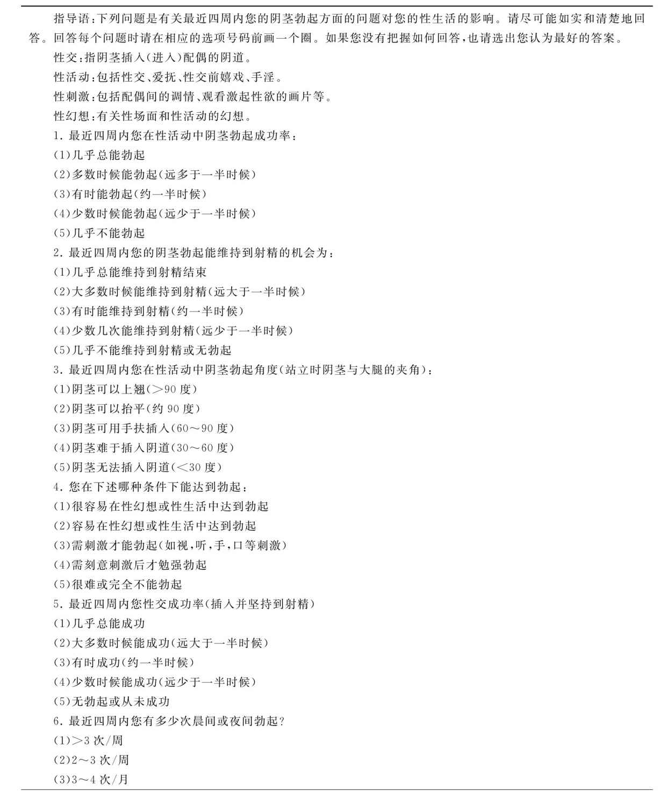
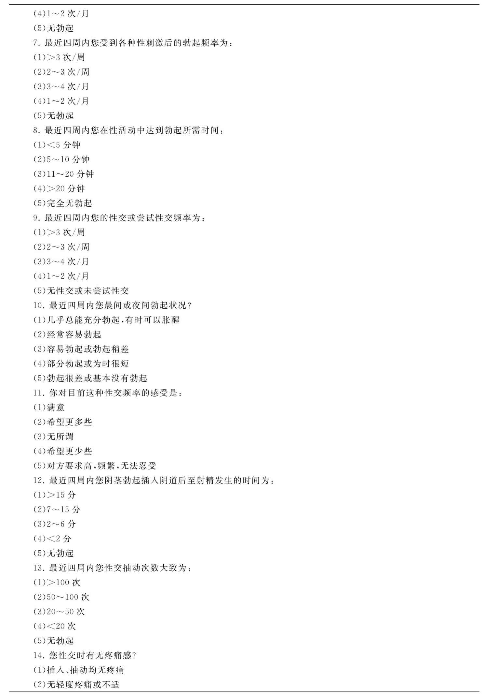
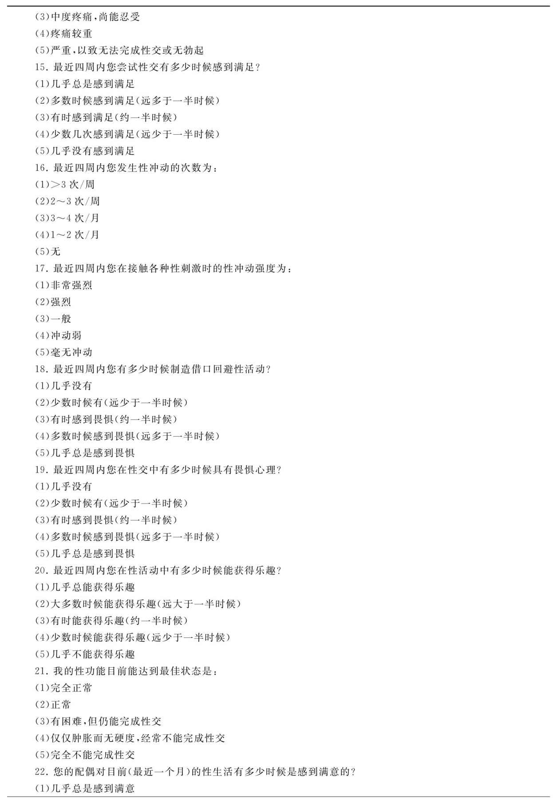
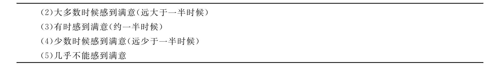
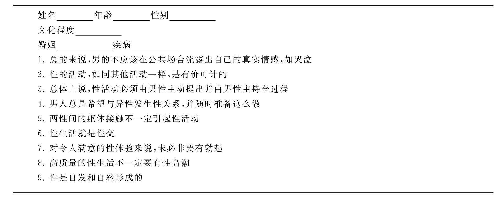
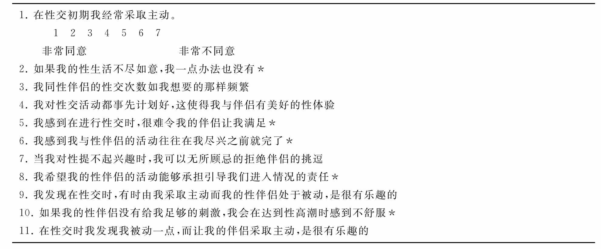
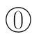

性学研究用诊断标准、定式检查和评定量表的发展，是20世纪60年代以来性学研究方法中较为重大的进展。这些都属于研究工具的范围，应用这些研究工具，使研究结论更具有客观性、可比性和可重复性。
本节着重介绍性学研究量表的基本性质，及其在性学临床和研究中的应用。
没有比较，就没有研究。研究工作的最基本的一条，就是进行比较。例如，把新药物和标准药物进行比较，把某一疾病和其他疾病或正常群体做比较，或者是把一病种的各个类型做比较，如此等等。这类比较可以是绝对的，就是谁高谁低，孰优孰劣，好似定性的比较；也可以是相对的，如几种疗法中，哪一种最优，哪一种次之，哪一种较逊，哪一种最差。这里便涉及一个概念，便是“等级”，这是量表中最基本的概念之一。
在日常生活中，我们经常应用各种表示等级的词汇。例如，我们在评价一个人好坏时，我们会把这个具体的人，和一般的人比较，并分成若干等级：最好、很好、较好、一般、较差和最差等。这便是从好到差系列的7级评定法。把这样的方法规范化，应用于性功能及性功能的心理社会因素的评定，便成为性学研究用的量表。
评定量表中量表一词的原文是“Scale”。这个词表示为“尺度”、“标度”、“刻度”、“等级”和“比例尺”等。换句话说，是表示数量的概念。那么，这里就有一个十分基本的问题，人的正常或异常心理活动，能不能正确的测量或估计，开始时人们是有怀疑的。然而，近十几年来的实践证明，人的心理活动是可以评估的，它广泛的运用于精神对智力、人格、心理状态的评价。
评定量表的分类，就其内容来分，可以分为诊断量表和其他量表；就其评定方式而言，可以分为大体评定量表和症状（分项）评定量表，或自评量表或他评量表，或观察量表或检查量表等。
量表的种类很多，它们有的较好有的较差，如何来评定量表的质量呢？换言之，如何来为自己选择有效的量表呢？
1.信度（reliability）又名可靠性，是指量表本身稳定性及可重复性。常用的检查方法是应用联合检测法和再检查法。
联合检查法，又名检查者观察者法。即由二位或更多的评定员，同时检查患者，其中一人作为检查者，其余为观察者。然后，分别独立评分，最后比较评分结果，统计分析各检查者间评分的一致性和相关性。如果量表评定的结果是可以重复的，那么，在同一场合，观察到相同的情况，应该得到相同的评分。在症状量表中，联合检测法是最常用的检验信度的方法，这也是训练评定员的重要方法之一。
检查和再检查法，又名重测法，用于检查量表的稳定性。即在相隔不长的时间内，由统一评定员或两名评定员，分别来做评定，然后比较评分结果的相关情况。这一方法具有其局限性。因为如果间隔时间太长，患者的症状已经起了变化；而时间过短，由同一评定者评定可能有意无意地受上次评定的影响；若有不同的评定员评定，则又加上不同的评定员这样一个变因。
2.效度（validity）又名真实性，指量表的评定结果能否符合编制目的，以及符合的良好程度。就症状量表而言，主要的是指评分结果能否反映病情的严重程度及变化。
常用的效度检验有：内容效度和平行效度两种。
所谓的内容效度即从其内容来看，是否符合量表所试图检查的要求。例如，以焦虑量表而言，它是否包括了精神性、运动性及躯体性焦虑这三个方面。在每一个方面是否包括了常见的重要的症状项目。内容效度通常无理想评估指标，主要通过专家对内容的评价和编制量表时严格按预定的定义、行为取样的范畴进行项目筛选来保证。每一项目的定义是否合理，应符合通行的学术观点。
平行效度，有两种方法，一是和临床判断相比较，又名经验效度；另一类是和公认的其他同类量表的评定结果相比。以某种性功能问卷为例，可比较性医学专家对性功能状况的评价和问卷评分的一致性；临床判断的疗效和治疗前后量表评分差值的相关性。
如果是诊断量表，则以敏感性和特异性作为效度指标。若与所谓“金标准”相比，所得结果称为标准效度或效标效度。
3.结构效度 反应编制的量表所依据理论的程度。如编制一个勃起障碍评定量表，必定依据有关勃起障碍的症状及理论。同时，所编制的量表是否符合原来依据的理论框架，也可用结构效度来检验。结构效度主要用于新编量表及量表本身的研究和分析。就临床应用而言，内容效度及效标效度就已经足够。
另外，评价量表的质量，还应考虑到量表的可行性（practicality），量表中的每一个选项对于回答者来说都应该容易理解，是否会因用词太专业化导致被试者产生误解而影响回答及测试结果。在临床使用中，笔者发现有的问卷所使用的词汇超出了大多数被试者所能理解的范围，一些用语使被试者产生模棱两可的感觉。可比性（comparability）也是选择量表应考虑的一个指标。被试者做答的数据应与标准化数据相比较才有意义。因此，必须考虑到标准化样本是否适合你的被试者。如果标准化的样本是50～70岁的男性，而你的被试是一个年轻的女性，则标准化被试对你的被试者来讲就失去了意义。同时也应考虑到许多量表或问卷的常来自大学生，而他们并不一定能代表你的被试者。最后应考虑到这次测试是否将花费您和您的被试者太多的时间及费用。
性功能状况评定量表的研制始于20世纪60年代，70年代达高峰，80～90年代仍不断有新量表产生，量表在性学研究领域中能蓬勃发展，除了它自身的原因（如性交行为的道德属性从而决定了它不能在实验室或第三者（医生）在场的情况下对其进行“客观”评价。况且，作为身心疾病，性功能障碍与心理学因素关系密切，而这些因素无法用现有生物学指标去评价）外，与量表本身的价值也有极大的关系。
作为客观标准，它并不是根据自己的意愿，随意把几个问题凑合在一起的问卷。性学研究所用的量表是经有关专业人员周密设计，对题项的反复斟酌，经临床验证及统计处理而成。其每一项目：①应具有被多数权威所认可的内容效度。②在不同的样本中具有一定的通过率。比如，一份合格的性功能评定量表的项目通过率，患者组和正常组得分之差≥0.30左右。③项目与总分、因子分或量表分之间内部结构具有一致性，相关值≥0.30。达不到统计要求的项目，需修改或删除。然后对初步定下的量表进行信度和效度检验，以确定其稳定性和准确性。诊断量表还需要报告其与临床诊断相比较而言的诊断“特异性”和“敏感性”。具有这种客观标准，不论是何人、何时、何条件下来评定受评者，根据这个客观标准来收集资料，作出等级评定，其所得的结果也比较客观，治疗评价也更准确，不容易发生与治疗医生相关的偏差。即使就他评量表而言，尽管评定者作出的评价是主观的，但其依据来源是真实的，从这种意义上来讲，同样具有相当的客观性。
对影响人们性功能状况的心理和社会因素描述，如果没有一定的数量，而只有文字描述，那么在不同地点，不同时间、不同观察结果便难以比较。评定量表使观察结果数量化，用数字语言代替文字描述，是研究样本较理想的入组指标和研究因素的变量形式，有助于分类研究，便于将观察结果做统计处理，更有利于计算机分析，研究的结果表达也更符合科学要求。
评定量表的内容全面而系统，等级清楚。用它来观察受评者，收集个体一般资料，评价心理状况各个方面，估计防治效果，一般不会遗漏重要内容。其功能相当于一份详尽的观察和晤谈大纲，并能协助评定者发现其他评估方法如观察、晤谈等方法的不足之处。在性医学门诊中，不少医生只注意患者的主诉，往往遗漏患者未提及的其他症状。比如，“忽略早泄患者的性高潮障碍；忽略患者的继发性性欲低下及心理社会文化因素；忽略患者妻子的性功能问题等等”。如使用性功能评价量表，就能全面了解在晤谈中被忽略或难以用语言表达而在评定量表中能暴露的一些信息。
评定量表能够广泛运用，一个重要原因在于各类人员较易学会操作方法，无须像心理测验那样的特殊器材和条件，一些测试工具（MMPI）的题项太多以致回答者产生厌烦情绪而抱以不合作态度，而部分量表价格昂贵也无法获得。一般来说，完成每一份量表评定通常只需10～30分钟，省时、省力、省钱，评定者和受评者都一致乐于接受。
评定量表具体的实施应按其使用手册规定的步骤严格进行。概括起来评定量表的实施过程有准备阶段、量表的填写、评定结果换算及结果解释报告这4个步骤。
在采用量表对某一人群实施评定之前，通常需要对评定者进行系统训练，选择适合的评定工具及评定场地。
评定者的训练就是组织量表的使用者（也称评定员）对有关所使用的量表理论基础进行全面的学习，并就量表的具体操作方法和结果解释进行反复练习，以达到熟练掌握所使用的量表评定方法，并能较准确的分析解释评定结果的目的。一般经过一定的训练后，正式使用量表前最好要求预试，进行一致性检验，一致性检验符合要求才能正式成为合格的评定者。训练方式有两种，一种为集中训练，这种方式受训者较多（一般每个组最好为5～10人），虽较经济，但受训者易相互干扰；另一种为个别指导，即一对一训练，虽然效果好，但不经济。因此，二种方式相互结合最为理想。
评定工具的准备就是要选择适合评定对象情况的评定量表，量表选择正确与否，直接影响了评定的质量。评定量表一般为纸笔形式，即一些表格和填表用笔，但少量评定量表有时还要求准备一些评定用的道具。
评定通常无需特别的场地，一般在安静的房间进行即可。有些特殊人群（住院患者等）的评定量表需要到受评者经常活动的地方（如病房）进行评定，以使评定结果更加准确。
性学研究用量表填写观察中，首先应特别强调对问卷的保密措施，并填写受评者的一般资料，如年龄、性别、职业等。如果说是临床用量表，尤其要注明病种，有的还要求对受评者申请评定的理由及健康或疾病史作一简要描述。量表的各项目记录或填写方法，自评量表与他评量表不同。
（1）自评量表：各项目填写前就有一简短指导语，说明评定主要目的、评定内容的范围、评定的时间界定（如评定1周内出现的现象，还是几个月内出现的现象）、频度和程度标准以及记录方法与其他要求等，这一指导语虽用文字写明，但评定者最好口头加以说明。量表的项目由受评者自己填写，独立完成填表过程。如果受评者文化教育程度低，对一些项目不理解，评定者可逐项念题，并以中性态度把项目本身意思告诉受评者。自评量表评价也称单盲式评价，当事患者可能因期望不同而对自身症状及疗效评价偏高或偏低。
（2）他评量表：评定者一般多为专业工作者。评定的依据来源，大多数通过知情者提供。所谓知情者是指最了解受评者日常生活及学习、工作情况的人，一般为受评者父母、兄弟姐妹或配偶等亲属；或是了解情况的邻里、同事、老师等。这种通过评定者自己的观察印象直接记录量表各项目的评分，这类评定者常对受评者进行过系统的观察，如病房医师、与受评者接受密切的心理学工作者等。他评量表评价，也属于双盲式评价，有研究表明，第三者他评最接近实际情况。目前我国性功能障碍症状和疗效评价大多由当事医生直接参与，这种评价掺杂了当事医生的个人动机和期望，因而，当事医生的疗效自评总是高于客观情况。
（3）结果换算：量表的项目评分需要累加因子分（或分量表分）和总分，这些分数均为原始分，很多量表要求进一步转换成各种形式的标准分或百分位，或者做加权处理，如Derogatis性功能问卷（DSFI）的结果，须将原始分转换成T分才有意义。有些量表使用手册上提供了各种转换表，使用者只需查表即可。
为了达到评定量表的使用目的，需要对各种评定结果进行分析综合，提出结论，并对其意义进行解释。量表的种类，功能不同和评定的原因不同，其解释的深度各异。一般而言，如果只打算了解受评者某方面总的状况，总分即可。如果还想了解某方面内部成分特征，则需在因子分（分量表分）水平甚至项目水平进行分析。有些量表结果解释复杂，如MMPI，应由专门心理测验工作者进行分析。
将评定主要结果、结论及解释用文字或口头形式表达即报告。对某一人群的评定结果报告类似于科研报告，比较复杂，需要进行大量的统计学处理，如果这类报告可靠，则对该项研究有指导性意义；对个体评定结果的报告，用语要精确明了，解释合理，才有科学性。一般提交报告的对象多为专业人员，报告中应采用专用术语，如均数、标准分、百分位等，结论和解释要适度，因为任何评估方法都有一定局限性，结果有程度不一的误差，故不能绝对化。有时受评者个人或家属（评定者认为有必要告知）需要了解评定结果，则多以口头形式报告，一般把专业性术语用较通俗化用语表达，但要注意其科学性。
（1）参照标准不统一 不同的评定者，限于本身专业知识角度，对一些专业名词有不同理解，或一些术语本身概念不能统一，而以自己熟悉的概念为参照，致使评定结果不一致。
（2）信息来源问题 评定者可能对受评者缺乏足够的了解，对某些症状或行为不能作出如实的判断，从而高估或低估受评者。他评量表有时采用直接评定法，而要评定的现象又不一定在当时就会出现，甚至某种心理或生理的病理特征也不一定是经常出现。
（3）集中趋势 一般人皆有集中趋势现象，为避免评定结果过于极端，而多选择中间答案，而使最终结果不真实。
（4）严格和宽容倾向 有些评定者过于挑剔，评分过严；或者喜欢选用较优级别，给分过宽；或计算登记分数不准确；或者评定者偏好不同等都难以保证评定结果的真实性和一致性。
（1）提高评定者素质 评定者必须有一定水平的专业知识和相关学科知识，通常评定者作评定之前要进行专业训练，要能够切实地把握评定目标，彻底了解所要评定的各种行为及症状的含义，充分掌握评定量表的使用方法。
（2）建立良好的主评与受评的关系 评定量表结果要精确，在进行评定时，主评者与受评者之间必须保持友好信任的关系。否则受评者可能因对评定不合作使结果不准。
（3）正确合理地使用评定量表 评定量表的作用是使心理品质或社会现象数量化的主要手段之一，但比物理的数量化的难度大，加上目前的评定量表尚在不断发展之中，并未达到尽善尽美的程度，所以在认识它们的作用时，还要认识它们的局限性。临床医生若过于依赖量表评定，在发现评定结果与临床所见不相符或不能解决自己的疑难时，往往走向反面甚至完全否定评定结果。临床医生应掌握心理测量技术，提高自己综合利用有关资料的能力，对评定结果作出符合实际的分析。
性功能评定症状量表的研制始于20世纪60年代，在那个年代，对于勃起障碍的病因，大多数学者认为一般为心因性的，因而量表内容庞杂，包括了过多的了解心因性病因的项目，如Deroatis等（1979）编制的《性功能问卷》（Deroatis sexual function inventory，DSFI）。随着医学技术的不断发展，揭示了许多勃起障碍为器质性，因而病因的探讨主要靠实验室、流行病调查研究和临床试验性治疗。性功能评定量表主要用于度量一种现时症状及受测者对性生活的满意程度。在20世纪80年代，性功能量表开始从综合量表走向评价目标单一，符合临床需要的小型量表，如Golombok＆Rust（1986）编制的《性满意量表》（the golombok rust inventory of sexual satisfaction）。
1.性相互作用问卷（SII） 性相互作用问卷（sexual interaction inventory，SII）是Lopiccolo与Steger于1974年编制，用于评估夫妇双方性行为的满意感及频率。SII能有效的评估夫妇双方的交流问题及用于疗效评定。该量表由17种性行为组成（表24-1），每一种性行为由夫妇双方从6个维度来进行评价（表24-2），因此SII量表有102个问题。
表24-1 性相互作用问卷（SII）
表24-2 在SII中使用的打分表
续表
量表包括了11个分量表。量表1和2为男女频率不满意量表；量表3和4为男女自我接纳量表；量表5和6为男女性乐量表；量表7和8为男女感知正确度量表；量表9和10为男女双方接纳量表；量表11为总分，用于评价患者性功能及其夫妇满意度。大多数人完成SII不到30分钟。
研究表明SII具有良好的信度及效度（Lopiccolo Steger，1974）。重测信度：总分相关为0.81，内部一致性检验：a系数为0.88。收敛效率：总分r＝0.35，p＜0.01；判别效度为：患者和正常人症状判别为T＝8064，p＜0.01；治疗前后症状判别T＝6.97，p＜0.01。
2.Derogatis《性功能问卷》（DSFI）尽管许多评定者把重点放在夫妇双方的评估上，但是对于单独了解夫妇个人也是非常重要的。为了获得个人的详细信息，Derogatis与Melisaratos于1979年编制了性功能问卷（Derogatis sexual interaction inventory，DSFI）。该量表为一综合性量表，包括了10个基本自成系统的分量表。其设计与Derogatis的精神临床评定量表研制经验有关。在研制DSFI之前，他已经成功研制并发表了《主要症状问卷》（brief symptom inventory）、《情绪平衡量表》（affect balance scale）和《症状自评量表》（the self-report symptom inventory或symptom checklist90，简称SCL-90）。上述量表已经在精神病科广泛应用并获好评。Derogatis驾轻就熟地把上述内容与其他新设计量表放在一起组成了DSFI，DSFI不仅反映性功能，也反映继发于性功能障碍的心理问题，因此它是全面的综合性问卷。然而在临床上使用时，往往因题项太多，测试时间太长，问卷内容重复引起被试者厌烦而马虎作答，精神症状提问所占比例过多易使被试者反感。
DSFI的10个分量表包括：
（1）性知识量表（26项）
（2）性经验量表（24项）：调查被试者已经发生过的性行为。
（3）性欲量表（7项）：调查性交、手淫、接吻、爱抚、性幻想和理想中的性交频度等6个方面内容。
（4）性态度量表（30项）：旨在反应被试者的保守性和开放性。
（5）心理症状量表（53项）：即《主要症状问卷》（BSI），调查各种病例的精神症状。
（6）情绪量表（40项）：即《情绪平衡量表》（ABS），反映被试者当时的负面情绪（焦虑、抑郁、负罪感和敌意）与正面情绪（愉快、满足、活跃和爱意）所占的比例。
（7）性别角色量表（30项）：反映男性化和女性化的角色行为。
（8）性想象量表（20项）：反映在各种患者头脑中出现的、尚未付诸行动的或无法付诸行动的性愿望。
（9）体象量表（男女各做其中10项）：反映患者对自己的躯体现状的满意程度。
（10）性满足量表【10项性满意指数（9级自评）】：直接反映夫妇的性关系。
DSFI的信度、效度（1979）：DSFI报道了两种类型的信度，一种是测量分量表项目的内部一致性信度；另一种是测量量表暂时稳定性的重测信度。DSFI各分量表的内部一致性（n＝325）大多数都相当高，性知识量表的一致性检验最低（0.57），性经验量表的一致性检验最高（0.97）。重测信度也相当高（n＝60；间隔14天），仍然是性知识量表最低（0.61），性态度量表的重测信度最高（0.96）。DSFI的结构效度：对380名作答者进行因素分析发现，7个因子组成DSFI的10个分量（如心理症状量表和情绪量表都由命名为心理苦恼的因子组成）；DSFI鉴别效度：在一项有91例男性性功能障碍者与具有相似人口统计学资料的76名非性功能障碍者的对照研究中，9个分量表的得分（除性态度量表）及DSRI总分在两组分间具有极显著的统计学差异。在59例女性性功能障碍患者和类似人口的统计学资料的154名正常性功能的被试的对照研究中，性知识、症状、情绪、体像、性满足分量表的得分和总分在两组间均具有显著性差异。各分量表症状鉴别效度检验男性优于女性。如性欲量表，男性F＝16.33，p＜0.001；性经验量表，男性F＝8.44，p＜0.005；女性各为F＝0.09和0.073，差异无统计意义。性满意指数男性为F＝62.41，p＜0.001；女性F＝64.47，p＜0.001。
在国外，DSFI被广泛应用于临床，编制新量表时，也常被研究者当做“金标准”使用。Moyer（1979）曾用该量表比较87例性功能障碍患者和200位同龄正常人。发现患者在性知识量表、性经验量表、性欲量表得分低，性态度趋向保守，心理症状量表和情绪量表得分明显升高。正常男人的男性化得分高于男患者，而正常女性的女性化和男性化得分均高于女患者。正常男性的性想象得分高于男患者，而女性相反。女患者组在性满意指数得分上也有统计学差异。DSFI是性功能障碍研究的有效工具之一。
3.Golombok和Rust编制的《性满意量表》（GRISS） 该量表是现今在欧洲大陆流行的主要的性功能障碍评定量表。此量表优点是：简明扼要又涉及临床所见的各主要性功能障碍症状，为临床应用提供了便利。
GRISS由男女独立的两个量表组成，每一量表共24项提问，可分别构成7个量表。男、女量表中，4个分量表是相似的。如缺乏性敏感量表（SM）、性回避量表（VM）、性生活不满意量表（DIS）和缺乏性交流量表（CO）。另两个分量表各不相同，如男性阳痿量表（IMP）、男性早泄量表（PE）、女性阴道痉挛量表（VAG）和女性性高潮缺乏量表（ANO）。最后一项是总分。
该量表信度分半法：男表r＝0.94，女表r＝0.87。内部一致性检验各分量表相关在0.69～0.83间，重测检验0.47～0.82间。效度检验（效标效度）：症状严重程度评定相关：男表r＝0.53（p＜0.001），女表r＝0.56（p＜0.001）。治疗后疗效评定相关：男表r＝0.54（p＜0.005），女表r＝0.43（p＜0.005）。
国内学者李学谦在临床上曾用该量表对13位心因性勃起障碍患者进行疗效评定，结果表明该量表能适用于中国文化，并有效的反映出性治疗效果。
4.考虑到国内至今未有专门的评估勃起障碍的量表，仅有的一份评定性功能状况的综合量表也忽视了年龄对性功能的影响及诊断量表的敏感度和特异度等指标。而国外性学理论发展活跃，根据各自理论设计的问卷未必能反映我国临床的需要。因此，为获得一个较适于我国文化背景的评定勃起障碍症状的性功能量表，既可对就诊者的性功能作鉴别，又可作定量分析。刘明矾、马晓年在1998年编制了一个勃起障碍评定量表（Erectile Dysfunction Rating Scale，EDRS），初步问卷取自《实用男科杂志》上的一份讨论稿，此讨论稿为马晓年等性医学专家多年临床经验并经多位专家反复讨论及修订而成。作者在着重了解调查有关评定勃起障碍患者临床症状特点的基础上，对90个条目进行测试，并根据临床需要，取消讨论稿中涉及较多的各种病因检查项目，并修改意义不清的用语，初步确定了由22题组成的“勃起障碍评定量表”。由于电脑作答方式与纸笔方式不同，存在选项“即选即消”的特点，降低了外来因素的影响，而打消了被试作答时害怕别人窥视的心理。作者在Foxprow软件下把EDRS设计成“阳痿初步诊断系统”。EDRS所有题项为最近四周内阴茎勃起方面的问题，根据症状程度和对性满意的影响程度分为5个等级，从毫无影响到影响严重分别记1、2、3、4、5分。EDRS中的22题均与测定勃起障碍密切相关（见表24-3）。研究表明，EDRS具有良好的信度及效度。条目内部一致性：Alpha＝0.96（P＜0.01）；分半相关：r＝0.973；量表总分重测相关：r＝0.857。因子分析是验证量表结构效度的主要方法，EDRS所获性唤起、性活动、性满意3个因子与DSM-Ⅳ中ED的诊断标准存在着对应关系，能较满意地解释勃起障碍患者的基本临床特征，与临床客观现象相吻合。在以症状为主的本量表中以年龄作为影响变量确定划界值，以临床诊断作校标，对ED患者与正常被试者以分界值54（20～49岁组）及59（≥50岁组）作诊断划界分，临床诊断试验结果表明总灵敏度为95.89%，总特异度为95.49%，总准确度为95.70%，实证效度较好。
EDRS为一现时症状及性关系满意程度的评定量表。项目设计基于国际公认的分类诊断标准和满足我国临床实际需要的小型量表，有利于推广使用。EDRS的题目定式化，在测试答题之前，对性交、性活动、性刺激、性幻想等性学概念进行统一科学定义，使被试者不致因误解题意而影响作答，采用5级评分方法，易被评定者掌握。评定用时少，大多数被试在15分钟之内即可完成。从初步结果来看，EDRS能较好地反映勃起障碍患者临床症状的基本特点，有较强的鉴别效用和定量作用，能满足临床及科研的需要。
表24-3 勃起障碍评定量表（EDRS）
续表
续表
续表
这类量表均为专项量表，可根据不同的临床研究需要灵活选用。按这些量表的用途，大约可分为4种：①用以评价和性有关的单项能力和特质的量表。②用以评价婚姻关系的量表。③用以评价情绪的量表。④用以评价人格特征的量表。
它们重点研究性功能中的某一功能，如性欲，或反映性行为的某种社会文化特征，如性态度、性角色和控制源等。
（1）《性态度问卷》（the sexual attitudes questionnaire，SAQ）：Goldfried Friednan（1982）认为，非表达性和高工具性是这个社会中男性的特征。它们非常明显的出现在男性与女性的交往中，男性经常寻找非情感投入，视亲昵、爱抚与依附为非男性气质。Jourard报告，这种非表达性消耗能量，增加压力，并使当事人缺少来自对方身体暗示。Backer（1987）为评定西方人性态度而设计了SAQ。该量表短小简明，其核心提问仅9个项目（见表24-4）。
表24-4 性态度量表（SAQ）
《性态度问卷》为4级评分，完全不同意0分，大部分不同意1分，大部分同意2分，完全同意3分。第5、7、8为反向记分，目的在于避免被试者受量表项目的暗示。总分得分范围在0～27，得分越高，性观念问题越多。该量表的重测信度为Kappa值为0.7。比较研究表明（控制年龄、文化背景、婚姻关系和宗教信仰等方面的变量），正常组（n＝24）在该量表的总分为5.1±3.0，性功能障碍患者组（n＝32）总分为10.6±3.7，具有显著统计差异。
（2）两人性生活控制源（the dyadic sex regulation scale，DSR）量表发：评价有关与伴侣之间性生活的控制观念，Catania Mc Dermott ＆Wood（1984）通过对异性和同性伙伴所进行的有关性生活态度的开放式访谈调查编制了DSR量表。该量表共有11个测题，由受测者自行填答，采用的是Likert式7点评尺（1代表非常不同意，7代表非常同意）。量表中有5题（第2、5、6、8、10题）为平衡起见，而以反向表述。在对这些测题进行反向掉转之后，就可以相加为总分，分数越高表示内控程度越强。本来并没有采取十分系统的测题筛选办法，但每个测题在概念上都经过精心的考虑，务求与控制源有关。量表分数分布范围为11（外控）至77（内控）。DSR的信度资料和表面效度都不错。Cronbacha值为0.83。就DSR测题进行主成分因素分析发现，除第一因素外，测题在其他因素上均没有显著负荷。第一因素的变异解释率为95%。间隔两周的再测信度为0.77。效度主要为聚敛效度，DSR与Nowicki-Strickland成人内/外控量表（ANSIE，Nowicki＆Duke，1974a）有显著相关（r为0.19，p＜0.05，115人）。DSR与两人互报的性生活状况有相关，性生活的内控性与较高频率的性交、伴侣的口交、与伴侣一起达到性高潮、性关系、热情表达、及性满意感有关。它也与性生活中有较少的焦虑有关。相反，ANSIE与这些相关均较弱（表24-5）。
表24-5 两人性生活控制源量表
注：＊为反向记分题
（3）Bem性别角色调查量表（Bem sexbol inventory，BSRI；Bem，1974）：Bem性别角色调查量表（BSRI）根据受测者自述其是否具有社会认为是好的男性刻板和女性刻板性格特征，来分别评价其男性气质和女性气质。在作答BSRI时，受测者要在60个性格特质项目上表示自己是否具有此项目所述的特质。全部测验时间为15分钟左右。20题男性气质和20题女性气质涵盖了性格特点的广阔领域。两个量表在实证上被证明是相互独立的，而且每个分量表的因素不只一个，这与Bem认为性别角色本身就具有异质性的观点一致。BSRI有良好的信度，它的内在一致性信度：男性气质量表的a为0.86；女性气质量表a值为0.80；社会期许量表a值为0.75。它被广泛应用于各类问题的研究，施测来自各年龄、各个国家和文化的受测者，而且BSRI的效度也相当好。当被用于与编制量表的理论相似的研究中时，更是如此。BSRI的最常用的计分方法是用中位数分类法将受测者分为男性特质（男性化分数高于中位数，女性化分数低于中位数）、女性特质（男性化分数低于中位数，女性化分数高于中位数）、双性特质（男女性化分数都高于中位数）、未分化者（男女性化分数都低于中位数）四种性别类型。BSRI是性别角色研究中最常用的测量工具，也是其他测量工具精心比较的效标。
Bem认为兼具有男性与女性特质者的性别角色行为较具弹性，视情景的需要而表现男性或女性角色行为，因此较易获得满意的人际动力、人际吸引、感情表达与爱情关系。Walfish and Myetson（1980）的研究表明，男女双性化同其他类型的性别取向相比，更少有性行为的定型观念，双性化女性在性生活中比女性化气质女性更为舒适，而双性化男性在性生活中也比男性化气质的男性更为舒适。作者曾用此表对30例心因性勃起障碍进行测评，发现有近一半患者呈现女性化性别类型，并与44例对照组比较，卡方检验显著性差异（x2 ＝11.33，df＝3，p＜0.01）。然而，同国外一些研究相似，作者在临床上并未发现双性化的男性比传统定义的具有刻板观念的男性在性生活上更为满意，因此，我们对双性化这种性别类型仍不能期望过高，它可能并不是我们社会中所有性问题的灵丹妙药，也许性仍然是一个较为脆弱及敏感的领域，在这个领域中，放弃传统性别角色行为，接受新的性别角色行为类型的回报并不是显而易见的。
婚姻关系与性关系密切相关，马斯特斯与约翰逊估计在美国至少有半数的婚姻伴侣中存在着某种形式的性功能障碍。他们强调，性功能是婚姻关系的一部分，因此必须在婚姻关系的背景上来考察某一方的性功能。性功能障碍可能是婚姻关系紧张或破裂的原因，也可能是结果。把婚姻关系作为一个整体来处理，才可能在性治疗中取得疗效和巩固疗效。因此，评价婚姻关系一直是性学研究中的一项任务。
（1）Olson婚姻质量问卷（ENRICH）：婚姻幸福与否受多维因素影响，它主要源于3个方面。①个体因素：包括文化教育背景、价值观、对婚姻的期望、在婚姻中承担的任务、个性等；②婚际因素：包括夫妻间权利与角色的分配、夫妻间的交流、夫妻间解决冲突的方式与能力、性生活等；③外界因素：包括经济状况、与子女、父母的关系，与亲人的关系等。因此，研究者们都试图编制一个从多维角度能准确判别某婚姻是否幸福，能测出婚姻不幸福的症结，能了解婚姻幸福原因的测评工具。据此，美国明尼苏达大学Olson等教授于1981年将已有较好信效度的“婚前预测问卷（PREPARE）”作为基础，编制了本问卷。目前，它主要用于婚姻咨询工作中，用以判断婚姻的满意程度，识别婚姻的冲突所在，以便有针对性地展开婚姻治疗和效果观察。
ENRICH共包含124个条目，内容包括过分理想化、婚姻满意度、性格相容性、夫妻交流、解决冲突的方式、经济安排、业余活动、性生活、子女和婚姻、与亲友的关系、角色平等、性及信仰一致性共12个因子，每一个条目均采用5级评分制，分为确实是这样、可能是这样、不同意也不反对、可能不是这样、确实不是这样。该问卷条目内部一致性平均相关系数为0.74。重测信度为0.87（样本1344名）。其判别婚姻满意不满意的准确性的判别效度为：85%～90%（样本数7621名受试者）。与其他婚姻问卷相比，它的信、效度检验具有样本量大、控制了背景因素干扰，多维度，夫妇双方评估等特点。
ENRICH的统计指标主要为总分和因子分。总分高揭示婚姻质量好。因子分着重反映受试者的婚姻某一方面的情况。各因子分别为：①过分理想化，②婚姻满意度，③性格相容性，④夫妻交流，⑤解决冲突的方式，⑥经济安排，⑦业余活动，⑧性生活，⑨子女和婚姻，⑩与亲友的关系， 角色平等性， 信仰一致性。
（2）Locke-Wallace婚姻调适测定：婚姻调适是指夫妻间在一定的时间内的相互适应。1959年，Locke和Wallace收集了所有测定婚姻调适的量表，共383个条目。从中筛选出了15个条目满足下列条件：①在原来的研究中有最好的判别水平，②不与所收集的其他条目重复，③研究者认为其能反映婚姻调适的主要方面。这15个条目便构成了Locke-Wallace婚姻调适测量。该问卷的目的是客观地、定量地对夫妻的婚姻调适进行评估，对所有已婚者的婚姻调适均可用该问卷予以评定。
该量表的信度系数为0.90（由split-half法计算，由Spearman-Brown formula校正）；判别效度（critical ratio）为17.5，具有显著性差异。国内有人将该问卷翻译后在25名已婚个体中进行重测（间隔10天）相关系数为0.59，提示信度较好。将量表应用于118对婚龄在1～10年、文化程度均在大专以上的夫妻，其中自觉对婚姻满意者（191人）的问卷分为113.5分，自觉对婚姻不满意者（45人）的问卷分为83.5分，t检验两组有显著性（p＜0.01），提示该问卷有效。
情绪因素既是一应激源，又可影响个体对应激刺激的认知评价和应付反映的程度，它与心因性性功能障碍的关系较为密切。
焦虑是性功能障碍患者中最常见的情绪问题。它可能成为性功能障碍的起因，也可能继发于心功能障碍而成为慢性化的因素。多数专家都赞成心因性功能障碍的主要中间变量是性行为焦虑，性行为焦虑作为一种状态焦虑，是人类有机体的一种暂时的情绪状态。其特点表现为对烦扰和紧张的、主观的、有意识的情感，并且也唤醒自主神经系统的活动性。
MartinB（1973）总结了焦虑伴随的心身反应，他把这些反应归结为：①自我感觉方面的：担忧，迫近的、即将来临的危险感受；紧张，不能集中注意力，即刻瓦解的感觉；逃避和摆脱现状的强烈愿望；②行为方面的：逃脱行为，回避行为，言语异常，动作协调异常，解决问题的复杂过程异常；③心理生理的：肌紧张或震颤，心率和呼吸变快或不规律，血压增加，手脚出汗，胃肠功能异常，腹泻，小便过多等。当性功能障碍患者处于性行为焦虑时，他不能表现出对自身性感受的专注，并且在必要时及时地改变这种定向的能力。他们迫切希望性唤起趋向不要受到外部的刺激的影响。然而，满足配偶的要求以及配偶期望的眼神，这些偶尔出现的无关刺激周期性地干扰患者的新感受，而外界信息的输入与加工要求有鉴别、有净化才能做到最为有效。这些额外的干扰阻碍了患者集中注意于自身的性感受，从而造成性唤起缓慢或丧失，由此引起患者性唤起能力异常。
（1）焦虑状态/特质焦虑问卷（STAL）：特质焦虑（trait anxiety）的概念。前者描述一种不愉快的情绪体验，如紧张、恐惧、忧虑和神经质，伴有自主神经系统的功能亢进，一般为短暂性的。特质焦虑则用来描述相对稳定的，作为一种人格特质且具有个体差异的焦虑倾向。STAI由Charles Spielberger于1977年编制，并于1983年修订，为自我评价问卷，其特点是简便，并能相当直观地反映焦虑患者的主观感受，而且能将当前状态和一贯特性的焦虑症状区分开来，优于其他焦虑量表。STAI共40个项目。所有项目采用1～4分的四级评分法，前20个项目是询问焦虑状态的，各级标准为：1.完全没有，2.有些，3.中等程度，4.非常明显。后20个项目是询问焦虑特性的，各级的标准为：1.几乎从来没有，2.有时有，3.经常有，4.几乎总是如此。而1、2、5、8、10、11、15、16、19、20、21、23、24、26、27、30、33、34、36、39等20个项目为反向记分。即按上述顺序依次评为4、3、2、1分。原作者对该量表进行了测试再测试的信度检验，发现焦虑状态问卷的稳定性较低，相关系数为0.16～0.62。特质问卷的稳定性较高，二次评分相关系数为0.73～0.86。同时进行了效度检验，该量表的一致性（concurrent）、会聚性（convergent）、区分性（divergent）和结构性（construct）比较满意，国内北医大精神卫生研究所与长春第一汽车公司职工医院精神科合作在长春地区和北京分别对正常人和抑郁症患者进行了STAI中译版的测试。获得与原作者近似的结果：正常人群总样本状态焦虑问卷评分为39.71±8.89（男375例），38.97±8.45（女，443例）；特质焦虑问卷评分为41.11±7.74（男），41.31±7.54（女）。抑郁症组（50例）：状态焦虑问卷为57.22±10.48，特质焦虑问卷为46.22±26.22，明显高于正常人群。因子分析均可得出焦虑因子和非焦虑因子。笔者曾用状态焦虑问卷对30例心因性阳痿患者组进行性行为焦虑测评（31.27±7.95），并与44例正常对照组进行比较（55.5±10.3），两组具有极显著性差异（t＝-11.383，p＝0.001），心因性阳痿患者组得分明显高于正常人群。
（2）焦虑自评量表：焦虑自评量表（selfrating anxiety scale，SAS）由Zung于1971年编制，它是一个含有20个项目，用于评价记录患者的主观感受的自评量表，SAS采用4级评分，主要评定项目所定义的症状出现频度，其标准为：①表示没有或很少时间有，②是小部分时间有，③是相当多时间有，④是绝大部分时间或全部时间都有。注意评分时有5个项目是反向记分（5、9、13、17、19）。SAS的主要统计指标是总分。由自评者评定结束后，将20个项目的各个得分相加，即得粗分（raw score）经过下式换算，y＝int（1.25x），即用粗分乘以1.25以后取整数部分，就得到标准分（index score，Y）。
国内有作者把该量表用于性功能障碍患者（男，32例；女，46例）的疗效评定，治疗前SAS得分为59.89±13.76，治疗后SAS得分为45.21±13.47，差异显著，p＜0.01。表明该量表有效的反映治疗效果。
（3）汉密顿抑郁量表（HAMD）：汉密顿抑郁量表（Hamilton depression scale，HAMD）由Hamilton于1960年编制，是临床上评定抑郁状态时应用的最为普遍的量表。HAMD大部分项目采用0～4的5级评分法。各级的标准为： 无，①轻度，②中度，③重度，④极重度。少数项目采用0～2级评分法，其分级的标准为： 无，①轻至中度，②重度。
（4）《明尼苏达多相人格调查表》（MMPI）：MMPI含556个自陈形式的项目，其中16个重复出现的题目分散在不同的位置上，主要用于检验被试者反应态度的一致性如何。因此，MMPI实际上只有550个不同的题目。这些题目的内容涉及面很广。包括身体生理状况、精神状况以及家庭、婚姻、宗教、政治、法律社会等问题的态度。MMPI分成4个效度控制量表，10个临床用量表及其他研究用量表。他们分别是掩饰量表（L）、诈病量表（F）、自我防御量表（K）、疑病（Hs）、抑郁（D）、癔症（Hg）、病态人格（Pd）、性别化（Mf）、妄想（Pa）、精神衰弱（Pt）、精神分裂（Sc）、轻躁狂（Mf）和社会内向（Si）。这些量表设计时侧重于病理心理内容，但在实际经验主持者眼里，MMPI剖面图能反映众多非病理性的人格特征。由于MMPI测验时耗时较多，分析又较复杂，除精神科用得较多外，性门诊中大多尚未开展此项测评工作。国外有过少量的研究。如Beufler（1976）认为Mf和Si两量表在诊断心因性功能障碍上有特殊意义，其标准分大于60就提示有心因性阳痿的可能，检出率达80%～90%。从理论上讲，心因性阳痿的患者Mf分与Si分应比正常人要高，即具有和异性相同而与同性相异倾向，并且不善于社交活动与言谈，内心闭锁，行为孤僻、寡言少语的人。然而，国内有作者对此进行过研究并未发现确诊为心因性阳痿患者组的Mf分和Si分与对照组有何差异。
在引进量表时，应掌握足够的信息，找出同类量表中品质最优、最适合我们实际需要者。而且，最好是在国际上较有影响，应用的较广泛的那一种。量表不一定是最新者最好。新编量表的作者总对他的新产品情有独钟，总是说他的量表与其他量表相比有哪些优越性。然而，只有经得起实践考验，愈来愈多的人使用的量表才具有生命力。许多量表自编制以来，并未得到广泛的验证和认可，除作者本人使用外，很少有人问津。因此，在量表引进时不必赶时髦。
量表的版权在我国是新近才遇到的问题。大多数量表不涉及版权，作者将量表全文公布，希望他人应用。但有些量表则有版权，如DSFI（性功能问卷），其翻译及应用都有限制。使用者不了解这一点，草率从事，很可能卷入版权纠纷。量表翻译之前，最好是向量表作者发封信，征求意见，取得同意。
一般在书刊上发表的量表内容或项目，或者是附有一张简单的记分单。单纯将之译出是不够的，对于如何评分，有何注意事项、如何解释结果、有哪些统计指标、量表信、效度如何，样本的大小及源至何处、结果解释是否适合于使用者的结果都应作全面的了解。
应将量表及其工作手册全文译出，应尽量译出原意。有时量表的条文用词简练，又无上下文；有些词或短语是多义的，即使借助于词典也难以抉择。此时，应向精通外语的同行或专家请教。量表是一种测量工具，在临床、科研上具有一定的应用价值，翻译一定要严谨，以免以讹传讹。
要检验中译本是否与原文本相符。常用的经验方法有两种：一是回译法，即将量表的中译本，请精通该国文字者或以该国文字为母语的外国人，重新译成原文。译者应该是不知道量表原文者。比较量表原文及回译的文本，如果发现两文本中有些条目有出入，则应重译，重译部分再进行回译，直到回译文与原本意义相同为止。回译校对法，在跨国的合作研究中是必不可少的步骤。另一检验法是找几名精通两国语言者对检查对象，用原文本和中译本各检查一次，比较两次量表检查的结果，相当于量表信度检验中的常用的重测法，只是在译本检验时，一次用外文版，一次用中文版。
译成的并经过检验的中文版本，要推广应用之前，还需在小样本中进行预测。一方面通过预测了解量表中译本实际应用中的问题，并从检查者和被检查者那里征集意见。另一方面，通过预初研究，取得中译本的信度和效度的初步资料，特别是信度资料。有时，在预初实验以后，还需对译本的文字进行一定的修改。
即将量表的中译本在一定数量的目标人群中应用，以期得到有关量表品质和性能的全部有关指标。量表原文本的品质和性能指标，只适用于原文在该地区应用的情况，中译本则应建立自己的参数，真正反映它在我国应用的结果。
目前，国内外应用的量表并不尽善尽美，国内有学者曾参考诸多国外量表在临床小范围试用，感到它们仍存在某些不足之处，例如，性行为、性观念甚至问卷的提问设计，存在明显的西方文化色彩。一些综合量表内容庞杂，包括过多了解心因性病因的项目。国外性学理论发展活跃，根据各自理论设计的问卷和因子分并不能充分反映我国临床的需要。由于知识产权法的实施，量表的引进有了许多新的限制，这便涉及自己量表的编制。
性学量表的理论和方法，均借鉴了心理测试，因此，新量表的编制也同心理测验的编制相仿，以下简述其基本原则。
应视量表编制为一项研究课题，研究目的必须明确。新编量表的目标应有针对性，易小不宜大。
立题者要在开始工作之前针对课题进行详细的文献检索，了解国内外有关现状。既可避免“撞车”，又可吸取前人的经验和教训。
量表的编制不可能一蹴而就，在成为正式文本之前，应先有草案的形成并经过反复讨论、实践和修改。草案的形成有两种方式，一是专家讨论，组织一批专家，根据他们的知识和经验编制初稿；另一是借鉴法，利用若干现有量表重新确定设计原则，进行选择或组合；或者是两者结合。
量表应先在小样本中进行预初研究，仔细地分析具体项目及全文本的适用性，听取调查员和被试者两方面的反馈信息。通常最初的草案项目多一些，预初测试后，根据各项的适用率、阳性预测值等指标和综合分析，去粗存精，综合平衡。然后组成新的草案，再作测试。
经过多次的测试和修改，形成正式文本。正式文本应包括量表全文、评分指南、应用手册和记录单等有关文件。
新量表正式发表前，必须在较大的样本中进行考核。对新编量表的性能和品质考核，比对引进量表的要求高，除在量表的品质中所提到的信度、效度外，还需进行项目分析，包括项目的适合率，项目的通过率，项目的内部一致性检验，检查组成量表的各项目是否同源。有些量表目的是为了判别正常或异常，或者是判断疾病的轻、中、重，则需要确定量表的分界值。分界值的确定有多种方法，可以以正常人的均值加上或减2个、1.5个或1个标准差，也可以取正常人的第90个或95个百分位数。还有的则是根据敏感性和特异性确定。在决定分界值时，还应考虑量表的用途。筛查量表要求高敏感度，以期尽量减少遗漏可能的病例。诊断量表则要求高特异性，以免将正常误判为有病。
（刘明矾）